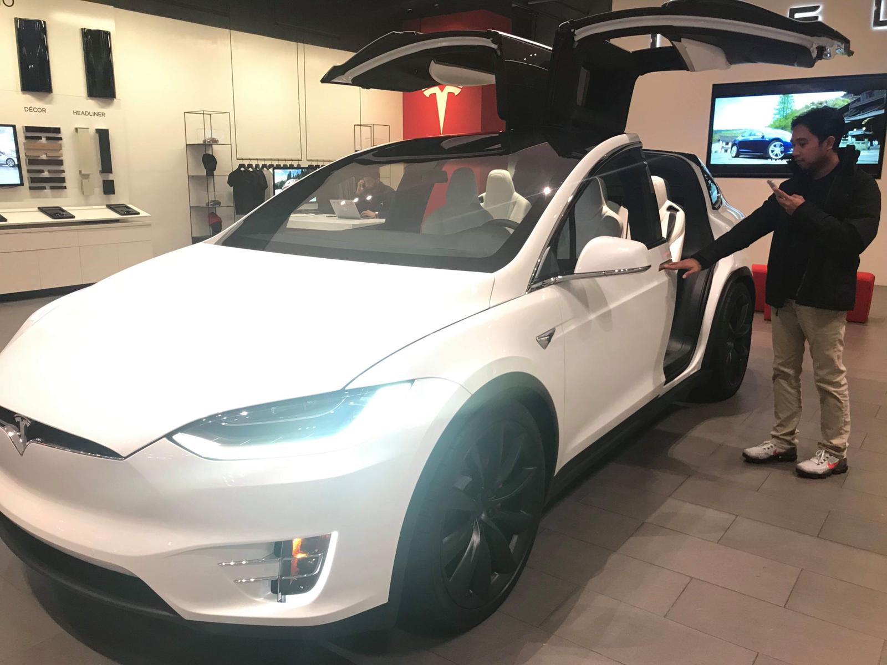
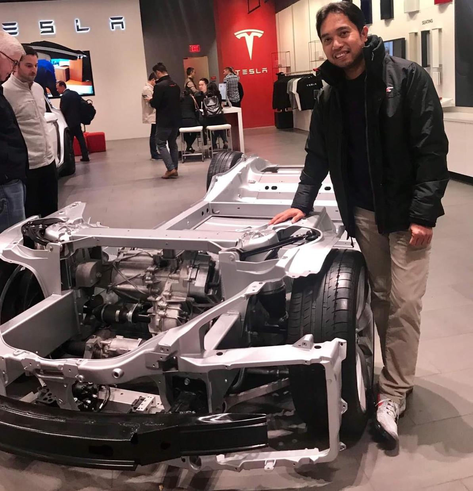
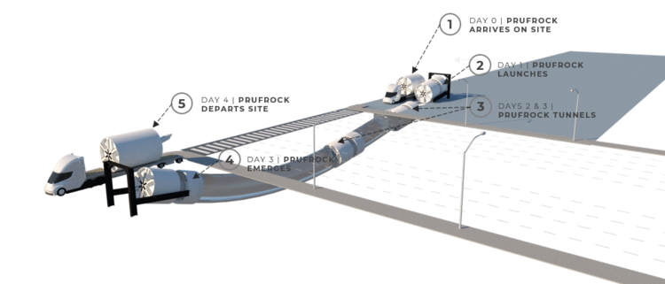

Tribute to Elon Musk and TESLA
The visionary of the century and the company that will 'accelerate the world’s transition to sustainable energy'!
- Business Moat
- Mission statement: “To accelerate the world’s transition to sustainable energy.”
- Pace of innovation
- Technical workforce that love to work for the company
- A/I driven company
- Leveraging expertise of other Elon's company
- Manufacturing line (machine that build the machine)
- Tesla and Elon Musk Fans
- Over the air update to make the car better
- Vertical integration
- Fastest production car


- Revenue stream now or very near future in descending order
- Cars (Roadster Model X, 3, Y, Cybertruck, Semi & Roadster2.0
- FSD (Full Self Driving)
- Solar Panel and Solar roof
- Autopilot
- Powerwall (residential) and Megapack (industial) batteries
- Insurance
- Energy Business (Autobidder or utility model side of the business, starts in UK and Australia)
- Tesla Service & Repair (and merchandise sales)
- FSD (Full Self Driving)
- Robo-Taxi
- Speed Boost Upgrades (buying option now for Model 3)
- Tesla Model $25k (coming in probably 2024)
- Battery Manufacturing (they may not be able to sell because they have infinite demand)
- Top 10 Things Media Ignores about Tesla (William Redlich YouTube MM Ignore)
- Ignore quarterly conference call message
- Ignore total cost of ownership a) oil change 2) fuel c) Maintenance cost
- Limit or outright ignore market potential of other businesses
- Assume there is competition (legacy auto can not compete, maybe the new upstart like rivian or lucid will on the car business side)
- The valuation of tesla is not just the value of their car business
- Other Elon companies
- SpaceX (Starlink will be divested) (spacex.com)
- Mission: “You want to wake up in the morning and think the future is going to be great - and that’s what being a spacefaring civilization is all about. It’s about believing in the future and thinking that the future will be better than the past. And I can’t think of anything more exciting than going out there and being among the stars.”
- Neuralink (neuralink.com)
- Expanding
 Our World - Neuralink is a team of exceptionally talented people. We are creating the future of brain interfaces: building devices now that will help people with paralysis and inventing new technologies that will expand our abilities, our community, and our world.
Our World - Neuralink is a team of exceptionally talented people. We are creating the future of brain interfaces: building devices now that will help people with paralysis and inventing new technologies that will expand our abilities, our community, and our world.
- The Boring Company (boringcompany.com) 
- Prufrock (The Boring Machine, TBM) Surface launch and porpoising: Launching the TBM directly from the surface eliminates the need to excavate a TBM launch pit, which is expensive and slow. Instead, Prufrock arrives on a truck, tilts down, and is mining within 48 hours. Porpoising allows the TBM to emerge at-grade without necessitating the excavation of an expensive TBM retrieval pit.
Tesla Website
- YouTubers and some of their best video
- Steve Mark Ryan
- Now You Know
- Tesla Daily
- Warren Redlich Battery Day: TSLA $20K By 2030?
- The Limiting Factor
- Financial Education
- Financial Education 2
- Hyper Change
TESLA 2022: Batteries - Revenue - TSLA $2000/Share
Twitter handles to follow as they have great content and interesting point of view
- @WholeMarsBlog
- @jpr007
- @RationalEtienne
- @TroyTeslike
- @elonmusk
- @skorusARK
- @ARKInvest
- @jwangARK
- @28delayslater
- @AlternateJones
- @garyblack00
- @chamath
- @CathieDWood
- @tashaARK
- Tesla’s small company's acquisition
- Grohmann - robotics and casting
- Riviera Tool - specializes in constructing stamping die systems
- Perbix - a factory automation company that will help build the factory of the future
- Compass AUtomation -also like Perbix
- Hibar Systems -- automation of small pumps
- Maxwell - battery manufacturing and proprietary process (dry electrode)
- SilLion - lithium-ion battery cell specialist startup
- Note: All acquisition are not just for the technology of the company being acquired but most importantly the engineers or talent of those company's
- Articles that best describe TESLA as a business and investment
- CleanTechnica
- ArsTechnica
- Renewable Energy Australia
- Website dedicated to EVs and Renewable energy
- CleanTechnica
- ArsTechnica
- Renewable Energy Australia
- Research Papers and documents
- 2017 Rethink Publication by Tony Seva
- SILA Research paper
- Noted independent articles or blogs
- September 18, 2020 The Musk method: Learn from partners, then go it alone https://www.autonews.com/manufacturing/musk-method-learn-partners-then-go-it-alone
- Battery Day Analysis Intercalation Station
- Teslarati Main Page Teslarati